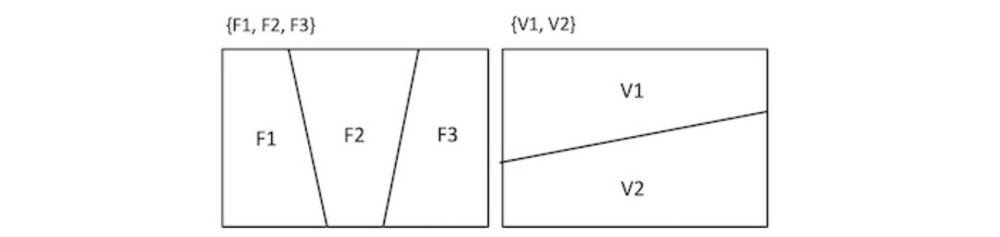
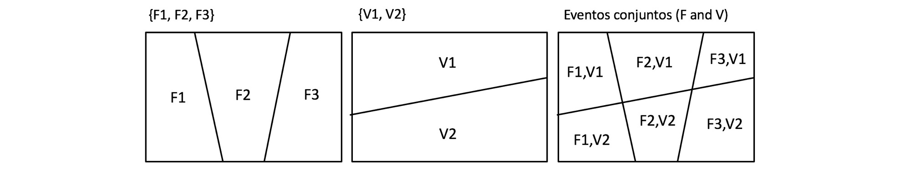

Introducción a la clasificación de texto usando Naive Bayes¶
60 min | Ultima modificación: Junio 22, 2019
Los clasificadores bayesianos ingenuos son un tipo de clasificador probabilistico en el que se considera que cada característica de una instancia contribuye independientemente de las demás a que un objeto pertenezca a una clase determinada. Mientras que en la inducción de reglas de asociación (algoritmo 1R) solamente se considera una sola característica para determinar a que clase pertence una instancia, en un clasificador ingenuo se consideran simultáneamente todas las características. En este tutorial se describen los fundamentos matemáticos en que se soporta este tipo de clasificadores y como se aplican a casos reales.
Definición del problema¶
En este tutorial se aborda el problema de determinar si un mensaje de texto es válido o spam. Este es un problema típico de minería de texto. Desde el punto de vista del negocio, la recepción de publicidad no deseada y mensajes fraudulentos es un problema que afecta a muchos usuarios; y es por ello, que las compañias prestadoras de servicios desean filtrar este tipo de mensajes con el fin de evitar el consumo de espacio en su infraestructura y la molestia para el usuario.
Se tiene una muestra conformada por los siguientes mensajes:
# Tipo Mensaje
---------------------------------------
1 spam w1 w3
2 spam w1 w2 w1 w3
3 ham w2 w4
4 ham w4 w5 w2
5 ham w2 w4 w2
El problema en términos de los datos consiste en clasificar si un mensaje SMS es legítimo o spam, a partir del análisis de las palabras que contiente; se supone que ciertas palabras que son más frecuentes dependiendo del tipo de mensaje.
Conceptos y Definiciones Básicas¶
Probabilidad¶
De los tutoriales anteriores, se sabe que si las variables \(x_i\) representan los eventos posibles, entonces:
Todas las probabilidades deben estar entre \(0\) y \(1\):
Las probabilidades de eventos mutuamente exclusivos (no pueden ocurrir simultáneamente) y colectivamente exhaustivos (cubren todo el universo de casos posibles) deben sumar la unidad:
En las siguientes figuras, los eventos F1, F2 y F3, y V1 y V2 están definidos sobre el mismo universo; y son mutuamente exclusivos y colectivamente exhaustivos, tal que se cumplen las dos propiedades anteriores

Probabilidad conjunta¶
Los eventos considerados ocurren simultáneamente. En la siguiente figura, los eventos F1 y V2 ocurren simultáneamente (área sombreada de la figura), tal que su probabilidad conjunta es:
Probabilidad condicional¶
Es la probabilidad de que ocurra un evento sabiendo que el otro ya ocurrio. En la siguiente figura el evento V2 es condicionar a la ocurrencia F1. Noté que en la siguiente figura, el universo no es el rectángulo anterior que cubre todos los eventos, si no el evento F1. De esta forma, la probabilidad condicional es sólo la proporción de V2 que se intercepta con F1, la cual corresponde a la porción sombreada de la figura de abajo. La siguiente expresión matemática permite calcular la probabilidad condicional en términos de la probabilidad conjunta.
En otras palabras,
para dos eventos A y B.
Independencia¶
Si los eventos \(A\) y \(B\) son independientes, la probabilidad condicional del evento A dado que ocurrio el evento B es igual a la probabilidad del evento A:
De la definición de probabilidad condicional:
Entonces:
Probabilidad marginal¶
Sea \(X_1\) con \(i = 1, ... , n\) , un conjunto de eventos mutuamente exclusivos y colectivamente exhaustivos. La probabilidad de un evento \(A\) es:
En la siguiente figura se puede observar que para cualquiera de los tres eventos \(F_j\) (para \(j=1,2,3\))
y que para los dos eventos \(V_i\) (\(i=1,2\)):

Unión (OR)¶
Para dos eventos \(A\) y \(B\):
En la figura de abajo se observa que al unir las regiones de los eventos F1 y V2, las áreas se traslapan y por tanto hay que restar la intersección.
Complemento o negación¶
Probabilidad total¶
La probabilidad total indica que la probabilidad de un evento A puede calcularse como la probabilidad de que ocurran los eventos A y B simultáneamente más la probabilidad de que ocurran los evento A y not B (el complemento de B:
La ecuación anterior puede expresarse en términos de probabilidades condicionales, tal que:
Teorema de Bayes¶
A partir de
Se obtiene que:
Despejando \(\text{Pr}(B \; | \; A)\),
En la última ecuación, se aplica el teorema de probabilidad total para el evento A.
Actividad.— Complete las siguientes tablas de probabilidades:
Probabilidades totales:
F1 F2 F3 Prob(V)
----------------------------------
V1 0.10 ? 0.03 ?
V2 ? 0.26 0.14 0.62
----------------------------------
Prob(F) ? ? ?
Probabilidades condicionales:
Prob(F|V) Prob(V|F)
F1 F2 F3 F1 F2 F3
---------------------- ----------------------
V1 10/38 ? ? V1 ? 25/51 ?
V2 ? ? 14/62 V2 ? ? ?
Actividad.— Verifique las dos tablas de probabilidades condicionales calculadas en el ejercicio anterior usando el teorema de Bayes (es decir, calcule Prob(V|F) a partir de Prob(F|V) y viceversa).
Aplicación al problema propuesto¶
En términos del problema de filtrado de mensajes de texto, V1 se interpreta como «Es spam» y V2 como NOT «Es spam», ya que son eventos mutuamente exclusivos y colectivamente exhaustivos. Si F es la ocurrencia de una determinada palabra en el texto, como por ejemplo «Viagra», entonces F1 sería «Viagra»(«viagra» aparece en el mensaje) y F2 sería NOT «Viagra» («viagra» no aparece en el mensaje).
De acuerdo con el teorema de Bayes:
\(\text{Pr}(\text{spam} \, | \, \text{viagra})\) es la probabilidad posterior.
\(\text{Pr}(\text{viagra} \, | \, \text{spam})\) es la verosimilitud.
\(\text{Pr}(\text{spam})\) es la probabilidad prior, es decir, la probabilidad de que un mensaje sea spam sin conocer el texto que contiene.
\(\text{Pr}(\text{viagra})\) es la verosimilitud marginal.
El cálculo de cada una de las probabilidades se realiza tal como se hizo en el ejercicio anterior.
Para el caso analizado, se tiene una muestra de ejemplos de mensajes que han sido catalogados como spam y válidos (no spam):
# Tipo Mensaje
---------------------------------------
1 spam w1 w3
2 spam w1 w2 w1 w3
3 ham w2 w4
4 ham w4 w5 w2
5 ham w2 w4 w2
Para realizar la clasificación se tienen cuatro palabras \(w_1\), \(w_2\), \(w_3\), \(w_4\) y \(w_5\) que pueden estar o no en cada uno de los mensajes de texto. La probabilidad de que la palabra \(w_1\) este en el mensaje se nota como \(\text{Pr}(w_1)\), y de que no este como \(\text{Pr}(\text{not }w_1)\).
Actividad.— Calcule las tablas de probabilidades:
Probabilidad individual \(\text{Pr}(w_i)\):
Evento w1 w2 w3 w4 w5
------------------------------------------------
Ocurre 3/14 ? ? ? 1/14
No ocurre ? ? 12/14 ? ?
Probabilidad conjunta \(\text{Pr}(w_i, \text{Tipo})\):
Tipo w1 w2 w3 w4 w5 Pr(tipo)
----------------------------------------------
spam 3/14 ? ? ? ? 6/14
ham ? ? 0/14 ? ? ?
Probabilidad condicional \(\text{Pr}(w_i \, | \, \text{Tipo})\):
Tipo w1 w2 w3 w4 w5
---------------------------------------------
spam 3/6 ? ? ? ?
ham ? ? ? 3/8 ?
Probabilidad condicional \(\text{Pr}(\text{not } w_i \, | \, \text{Tipo})\):
Tipo w1 w2 w3 w4 w5
---------------------------------------------
spam ? 5/6 ? ? ?
ham ? ? ? ? 7/8
A continuación se usará el teorema de Bayes para determine si el mensaje \(w_1 w_4\) es spam. Ya que este mensaje contiene las palabras \(w_1\) y \(w_4\) y no contiene las palabras \(w_2\), \(w_3\) y \(w_5\), la probabilidad de que sea spam es:
Por el teorema de Bayes, la ecuación anterior se transforma en:
Si se tiene en cuenta que la ocurrencia de la palabras \(w_1\), \(w_2\), \(w_3\), \(w_4\) y \(w_5\) son eventos independientes, es decir, que la ocurrencia de una palabra es independiente de la ocurrencia de las otras, entonces, el término \(\text{Pr}(w_1~\text{and}~\text{not}~w_2~\text{and}~\text{not}~w_3~\text{and}~w_4 ~\text{and}~\text{not}~w_5|~\text{spam})\) puede aproximarse como:
Estas cantidades ya fueron computadas en la actividad anterior.
Actividad.— Calcule la probabilidad de que el mensaje \(w_1 w_4\) sea spam, es decir, calcule la siguiente probabilidad:
Actividad.— Calcule la probabilidad de que el mensaje \(w_1 w_4\) sea ham, es decir, calcule la siguiente probabilidad:
Actividad.— Con base en los resultados anteriores, ¿El mensaje es ham o spam?
La ecuación
es la usada en la implementación computacional del algoritmo Naive Bayes para el cómputo de las probabilidades posteriores. En general, la ecuación anterior se puede escribir como:
donde:
\(F_i\) son las características (las \(x_i\)).
\(1/Z\) es un factor de escala.
\(C_L\) representa el nivel \(L\) de la clase \(C\).
Estimador de Laplace
Al construir la tabla de probabilidades de las ocurrencias de las palabras, es posible que una palabra \(w_k\) aparezca únicamente en los mensajes válidos y no aparezca en los mensajes spam. De esta forma si se calcula la probabilidad posterior de un nuevo mensaje que no la contiene, el resultado es cero para spam y uno para válido. Para prevernir esta situación, se hace que el conteo inicial no arranque en cero con el fin de que la probabilidad de ocurrencia sea siempre mayor que cero. Esto equivale a tener un mensaje para cada clase conformado por todas las palabras posibles.
Actividad.— Realice nuevamente el ejercicio anterior usando el estimador de Laplace.
Probabilidad individual \(\text{Pr}(w_i)\):
w1 w2 w3 w4 w5
----------------------------------------------
Ocurre 5/24 ? ? ? 3/24
No ocurre ? ? 20/24 ? ?
Complete la tabla de probabilidad conjunta:
Tipo w1 w2 w3 w4 w5 Pr(tipo)
----------------------------------------------
spam 4/24 ? ? ? ? 11/24
ham ? ? 1/24 ? ? ?
Complete la tabla de probabilidad condicional \(\text{Pr}(w_i \, | \, \text{Tipo})\):
Tipo w1 w2 w3 w4 w5
----------------------------------------------
spam 4/11 ? ? ? 1/11
ham ? ? 1/13 ? ?
Complete la tabla de probabilidad condicional \(\text{Pr}(\text{not } w_i \, | \, \text{Tipo})\):
Tipo w1 w2 w3 w4 w5
----------------------------------------------
spam ? 9/11 ? ? ?
ham ? ? ? ? 11/13
Calcule la probabilidad de que el mensaje \(w_1w_4\) sea spam:
R/ 36.56%
Calcule la probabilidad de que el mensaje sea \(w_1w_4\) válido:
R/ 27.49%
Implementación de la solución en Python¶
A continuación se presenta la solución usando el lenguaje Python.
Preparación¶
[1]:
import pandas as pd
import numpy as np
import seaborn as sns
import matplotlib.pyplot as plt
%matplotlib inline
%load_ext rpy2.ipython
Creación del archivo¶
[2]:
%%writefile data.csv
texto,tipo
ww1 ww3,spam
ww1 ww2 ww1 ww3,spam
ww2 ww4,ham
ww4 ww5 ww2,ham
ww2 ww4 ww2,ham
Writing data.csv
Lectura de datos¶
[3]:
df = pd.read_csv(
"data.csv",
sep = ',', # separador de campos
thousands = None, # separador de miles para números
decimal = '.') # separador de los decimales para números
df
[3]:
| texto | tipo | |
|---|---|---|
| 0 | ww1 ww3 | spam |
| 1 | ww1 ww2 ww1 ww3 | spam |
| 2 | ww2 ww4 | ham |
| 3 | ww4 ww5 ww2 | ham |
| 4 | ww2 ww4 ww2 | ham |
[4]:
##
## Se preparan los datos. El conjunto de
## datos es una lista de strings donde cada
## string es un mensaje
##
df.texto
[4]:
0 ww1 ww3
1 ww1 ww2 ww1 ww3
2 ww2 ww4
3 ww4 ww5 ww2
4 ww2 ww4 ww2
Name: texto, dtype: object
[5]:
##
## La clase a la que pertenece cada mensaje
## también se representa como una lista de strings
##
df.tipo
[5]:
0 spam
1 spam
2 ham
3 ham
4 ham
Name: tipo, dtype: object
Transformación¶
[6]:
##
## Se importa la librería
##
from sklearn.feature_extraction.text import CountVectorizer
##
## La representación DocumentTermMatrix es equivalente
## a una bag-of-words, en la que cada fila corresponde
## a un mensaje y cada columna es una palabra.
##
## A continuación se crea un transformador
##
vectorizer = CountVectorizer(input='content')
##
## Se aplica el transformador al texto para convertirlo
## a una bag-of-words.
##
X = vectorizer.fit_transform(df.texto)
##
## También se transforma la clase a una
## representación binaria
##
y = [1 if u == 'spam' else 0 for u in df.tipo]
y = df.tipo
[7]:
##
## Se imprimen los nombres de las columnas
##
print(vectorizer.get_feature_names())
['ww1', 'ww2', 'ww3', 'ww4', 'ww5']
[8]:
##
## Se imprime la matriz de términos y documentos
##
print(X.toarray())
[[1 0 1 0 0]
[2 1 1 0 0]
[0 1 0 1 0]
[0 1 0 1 1]
[0 2 0 1 0]]
[9]:
##
## Ya que interesa es la presencia o no de la palabra
## y no interesa la cantidad de veces que aparece, entonces
## se aplica una transformación a la matriz
##
X = [ [1 if element > 1 else element for element in row] for row in X.toarray()]
X
[9]:
[[1, 0, 1, 0, 0],
[1, 1, 1, 0, 0],
[0, 1, 0, 1, 0],
[0, 1, 0, 1, 1],
[0, 1, 0, 1, 0]]
Especificación del modelo¶
[10]:
##
## Se importa la libreria
##
from sklearn.naive_bayes import BernoulliNB
##
## Se crea un clasificador Gaussiano ingenuo
##
gnb = BernoulliNB(
## Laplace parameter
alpha=1.0,
binarize=0.0,
fit_prior=True,
class_prior=None)
Entrenamiento¶
[11]:
##
## Se entrena el clasificador
##
gnb.fit(X, y)
[11]:
BernoulliNB(alpha=1.0, binarize=0.0, class_prior=None, fit_prior=True)
Pronóstico¶
[12]:
##
## Se pronostica la clasificación de los
## mensajes para los datos de entrada
##
df['predicted'] = gnb.predict(X)
[13]:
df
[13]:
| texto | tipo | predicted | |
|---|---|---|---|
| 0 | ww1 ww3 | spam | spam |
| 1 | ww1 ww2 ww1 ww3 | spam | spam |
| 2 | ww2 ww4 | ham | ham |
| 3 | ww4 ww5 ww2 | ham | ham |
| 4 | ww2 ww4 ww2 | ham | ham |
Apéndice — Solución en R¶
A continuación se presenta la solución del ejercicio anterior usando el lenguaje R.
[14]:
%%sh
PACK=tm
if /usr/bin/test ! -d /usr/local/lib/R/site-library/$PACK;
then
sudo Rscript -e 'install.packages("'$PACK'")'
fi
[15]:
%%sh
PACK=e1071
if /usr/bin/test ! -d /usr/local/lib/R/site-library/$PACK;
then
sudo Rscript -e 'install.packages("'$PACK'")'
fi
[16]:
%%R
##
## Preparación
##
library(tm)
library(e1071)
R[write to console]: Loading required package: NLP
[17]:
%%R -i df
##
## Se crea un corpus que es una colección de documentos.
##
data_corpus <- VCorpus(VectorSource(df$texto))
##
## Para ver los documentos del corpus se usa lapply
##
lapply(data_corpus, as.character)
$`1`
[1] "ww1 ww3"
$`2`
[1] "ww1 ww2 ww1 ww3"
$`3`
[1] "ww2 ww4"
$`4`
[1] "ww4 ww5 ww2"
$`5`
[1] "ww2 ww4 ww2"
[18]:
%%R
##
## Se puede consultar un mensaje individual
##
inspect(data_corpus[[1]])
<<PlainTextDocument>>
Metadata: 7
Content: chars: 7
ww1 ww3
[19]:
%%R
##
## Se crea la matriz de términos del documento.
## Las filas corresponden a los mensajes..
## Las columnas corresponden a las palabras.
## El contenido representa la cantidad de veces que
## aparece una palabra en un documento determinado.
##
data_dtm <- DocumentTermMatrix(data_corpus)
##
## A continuación se visualiza el contenido de la
## matriz de términos del documento
##
inspect(data_dtm)
<<DocumentTermMatrix (documents: 5, terms: 5)>>
Non-/sparse entries: 12/13
Sparsity : 52%
Maximal term length: 3
Weighting : term frequency (tf)
Sample :
Terms
Docs ww1 ww2 ww3 ww4 ww5
1 1 0 1 0 0
2 2 1 1 0 0
3 0 1 0 1 0
4 0 1 0 1 1
5 0 2 0 1 0
[20]:
%%R
##
## La matriz de términos puede convertirse en
## una matriz de R
##
as.matrix(data_dtm)
Terms
Docs ww1 ww2 ww3 ww4 ww5
1 1 0 1 0 0
2 2 1 1 0 0
3 0 1 0 1 0
4 0 1 0 1 1
5 0 2 0 1 0
[21]:
%%R
##
## Se convierte la frecuencia de ocurrencia a "Yes" y "No"
##
convert_counts <-
function(x) {
x <- ifelse(x > 0, "Yes", "No")
}
x <- apply(data_dtm, MARGIN = 2, convert_counts)
x
Terms
Docs ww1 ww2 ww3 ww4 ww5
1 "Yes" "No" "Yes" "No" "No"
2 "Yes" "Yes" "Yes" "No" "No"
3 "No" "Yes" "No" "Yes" "No"
4 "No" "Yes" "No" "Yes" "Yes"
5 "No" "Yes" "No" "Yes" "No"
[22]:
%%R
##
## Construye el clasificador
##
clf <- naiveBayes(x, df$tipo)
##
## Se imprime un resumen de parámetros
## del clasificador
##
clf
Naive Bayes Classifier for Discrete Predictors
Call:
naiveBayes.default(x = x, y = df$tipo)
A-priori probabilities:
df$tipo
ham spam
0.6 0.4
Conditional probabilities:
ww1
df$tipo No Yes
ham 1 0
spam 0 1
ww2
df$tipo No Yes
ham 0.0 1.0
spam 0.5 0.5
ww3
df$tipo No Yes
ham 1 0
spam 0 1
ww4
df$tipo No Yes
ham 0 1
spam 1 0
ww5
df$tipo No Yes
ham 0.6666667 0.3333333
spam 1.0000000 0.0000000
[23]:
%%R
##
## Se pronostica para los datos de prueba.
##
predict(clf, x)
factor(0)
Levels:
[24]:
!rm data.csv